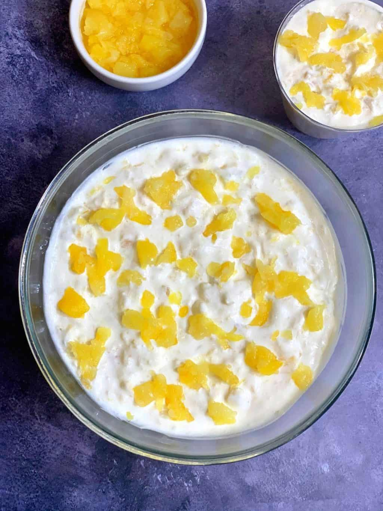
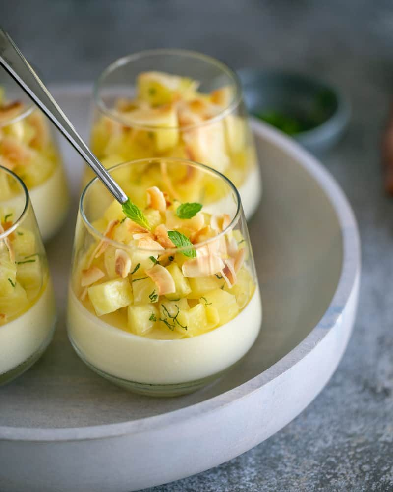

Pineapple Custard
This Pineapple Custard is a creamy, tropical dessert made with fresh pineapple and a smooth vanilla custard base. It’s quick to prepare and perfect for summer days or special occasions.

Ingredients
- 2 cups chopped pineapple (fresh or canned)
- 2 cups milk
- 3 tbsp sugar
- 2 tbsp custard powder
- 1/2 tsp vanilla extract
- Chopped nuts (optional)
- Mint leaves for garnish (optional)
Method
- In a small bowl, mix custard powder with 1/4 cup of milk to make a smooth paste.
- Boil the remaining milk in a saucepan. Once hot, add sugar and stir well.
- Lower the heat and slowly add the custard paste, stirring continuously to avoid lumps.
- Cook until the custard thickens, then remove from heat and let it cool slightly.
- Add vanilla extract and mix in the pineapple chunks.
- Pour into serving bowls and chill in the fridge for at least an hour.
- Garnish with chopped nuts and mint leaves before serving.
